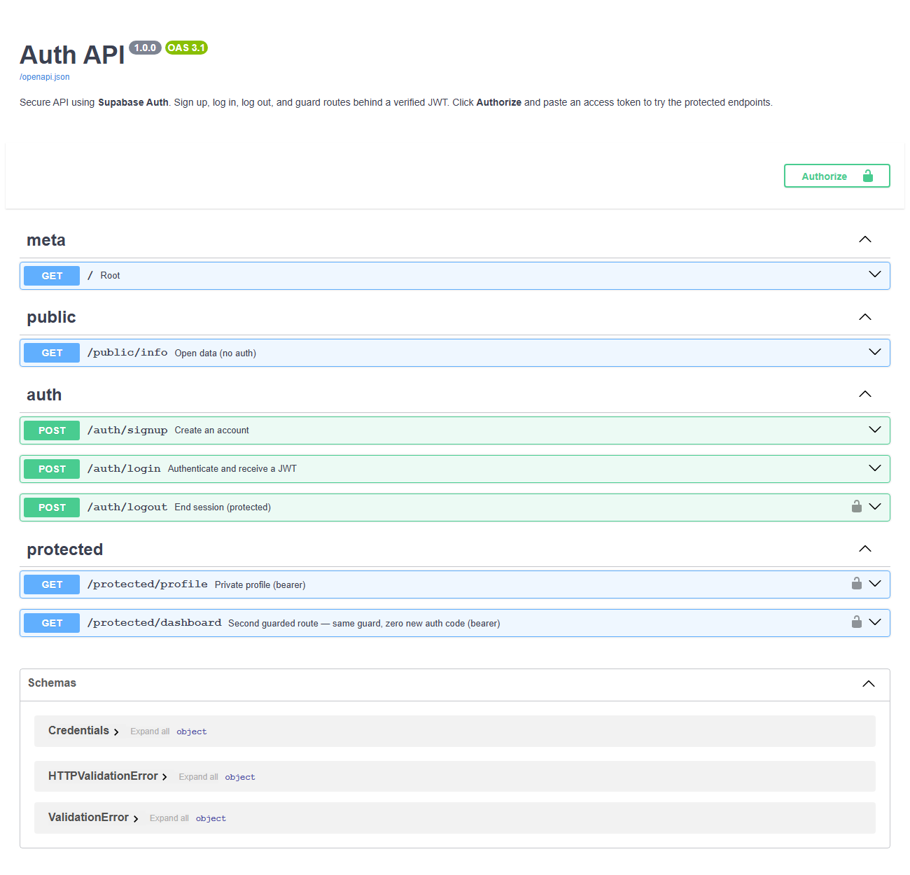

Auth · Supabase JWT · FastAPI guards
Login & Protect
Sign up, log in, log out, and guard routes behind verified JWTs. Supabase stores accounts; this API verifies tokens and opens or refuses the door.

Surface
| Method | Path | Meaning |
|---|---|---|
POST | /auth/signup | Create account |
POST | /auth/login | JWT access token |
POST | /auth/logout | End session |
GET | /protected/profile | Bearer required |
GET | /protected/dashboard | Same guard reused |
GET | /public/info | Open data |